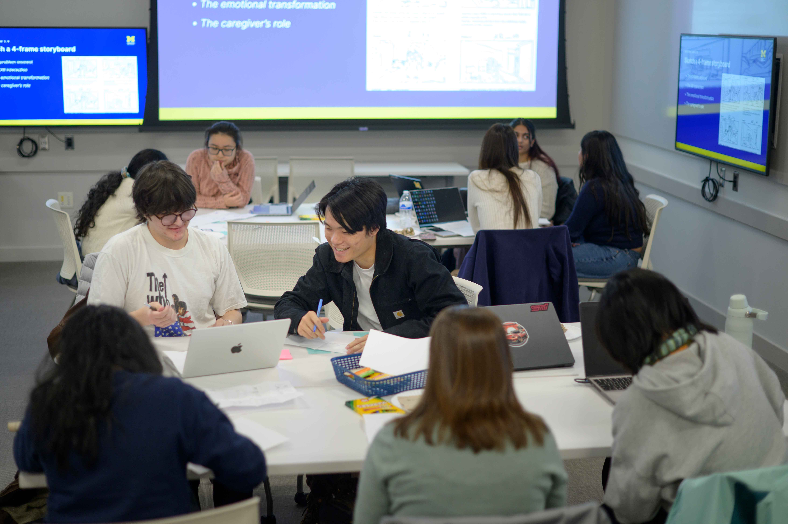

Your Resume
Your resume is more than a list of experiences: it is a tool for telling your professional story. A strong resume clearly communicates what you've accomplished, what you're good at, and how your skills align with the roles you're pursuing.
The UMSI Career Development Office supports students at every stage of resume development, from first drafts to target application materials for internships, jobs, and fellowships. The guidance on this page reflects what career coaches share in one-on-one appointments and workshops, so you can build confidence in your materials no matter where you're starting.
Craft a Resume that Tells Your Story
A compelling resume focuses on impact, skills, and relevance, not just responsibilities. Employers want to understand how your experiences prepare you for their role and what value you bring to their team.
UMSI students bring a wide range of experiences to the table, including coursework, research, projects, internships, part-time work, and student organizations. All of these can be resume-worthy when framed thoughtfully and clearly.
If you're unsure how to translate your experiences into strong resume content, a CDO Career Coach can help you identify strengths, refine language, and tailor your resume to your goals.
Resume Writing Made Easy: Steps to Success
Writing a resume doesn't have to feel overwhelming. Breaking the process into steps can help you move forward with more clarity and intention.
- Start with a Strong Foundation: Use a UMSI-approved template to ensure your formatting is clean, readable, and professional.
- Select Relevant Experiences: Focus on roles, projects, and activities that connect to the skills required for your target roles.
- Write Impact-Focused Bullet Points: Describe what you did, how you did it, and why it mattered. Highlight tools, methods, and outcomes whenever possible.
- Tailor for Each Opportunity: Adjust language, keywords, and emphasis to align with each job or internship description.
- Review and Edit: Proofread for errors, check formatting, and ask for feedback from peers or a career coach.
What Employers Look for in a Resume
While every industry and role is different, employers consistently look for resumes that are:
- Easy to scan and well-organized.
- Clear about skills, tools, and methods used.
- Focused on outcomes and impact.
- Relevant to the position being applied for.
Your resume doesn't need to include everything you've ever done. Instead, it should highlight what matters most for your next step.
Resume Resources
The following CDO resources are designed specifically for UMSI students and align with employer expectations across industries.
-
UMSI Resume Guide and Rubric
Comprehensive UMSI guide including tips, formatting rules, and sample accomplishments. -
Writing Effective Resume Bullets
Learn how to describe your work and impact in ways employers notice. -
Resume Rubric
Evaluate your resume using the same criteria as UMSI’s Career Development Office.
Ready for review? Book a resume review appointment with a CDO Career Coach.
Tailoring Your Resume for Different Roles
One resume rarely fits every opportunity. Tailoring your resume helps you show employers that you understand their role and how your background connects to their needs. When tailoring your resume:
- Utilize language from the job description.
- Prioritize the most relevant skills and experiences.
- Adjust bullet points to emphasize applicable tools or outcomes.
Tailoring doesn't mean rewriting everything. Instead, small and strategic changes can make a big difference.
Resume FAQ
-
How long should my resume be?
For most UMSI students and new grads, one page is best. More experienced professionals may require two pages. -
Do I need a different resume for each application?
It’s wise to tailor your resume to the requirements and keywords of each opportunity. -
Is it okay to include coursework or student projects?
Absolutely! UMSI coursework and projects are valued by employers, especially if they show relevant skills and impact. -
How often should I update my resume?
Update your resume every semester, after major projects, or whenever you gain a new role or responsibility.
Get Feedback and Keep Improving
Resume writing is an ongoing process. As your skills and goals evolve, your resume should evolve too. You can:
- Attend resume-focused workshops.
- Exchange feedback with peers.
- Revisit the resume rubrics to self-assess your materials.
Consistent feedback and iteration are key to building strong application materials.